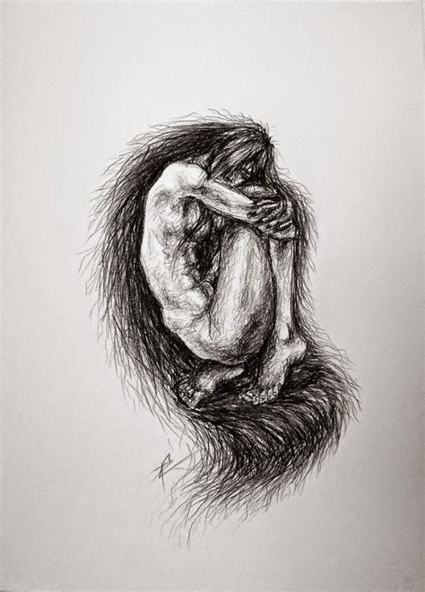

The Dominican Republic is known for its beautiful landscapes and paradisiac beaches. We all wish to visit one of their wonderful resorts and swim in their light blue ocean while zipping some ice cold drink with a straw and one of those tiny umbrellas. But according to the legend it is not all sand and sun in the Dominican Republic. Legend says that if you go a bit further into the mountains you might see one of the most mythical creatures from the region. Ciguapas as they call them, are savage women that live inside the shadows of the Dominican forests. They are small beautiful women with long skinny legs, dark skin, big dark eyes and long silky black hair. They wear no clothes since their gorgeous hair is so long that covers their entire body (like a long shiny gown). They are shy and moody and sometimes make a bird like noise while walking around the forest. But their most interesting feature is that their feet are set backwards so that if someone finds them they can run away from them while looking directly into their eyes striking fear into their enemy.  It is well known that the Ciguapas come out at night looking for food. They collect fruits and vegetables and hunt small animals in order to survive. Sometimes they even get closer to the villages and steal their food when there is no one watching. Then they climb to the top of a tree to eat and rest hiding from anyone that could be wondering around the area. Villagers know that if they hunt a Ciguapa she most likely will die since they can’t bare the sorrow of being captive. But there is a main reason for the villagers not to visit the forest at night and not even thinking about looking for a Ciguapa. Legend says that Ciguapas not only look for food near the villages but also for lonely men wondering around the forest. They lore them with their beauty and sensuality bringing them to their caves making passionate love to them and then killing them and eating them bit by bit. Many villagers’ deaths and disappearances have been attributed to the Ciguapas. Even nowadays people living near the forest know that when they hear a bird like noise at night they better stay in their homes with their families and of course, guarding the kitchen.